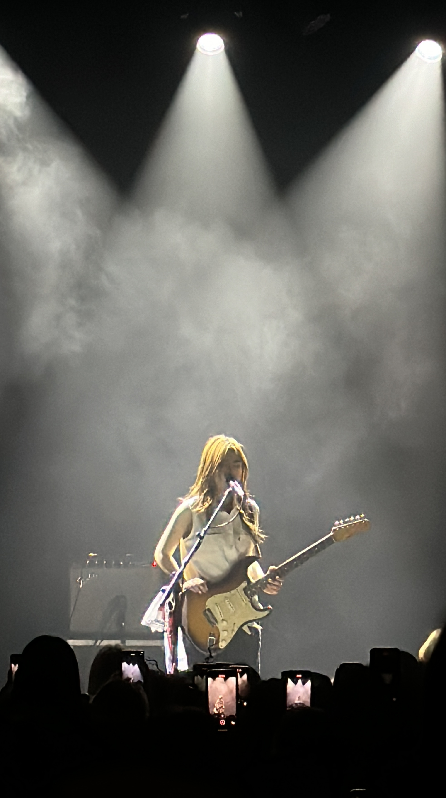
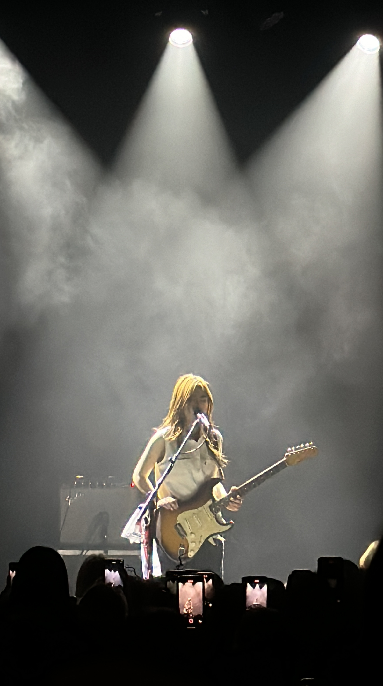

About Me 👶
My name is Mark Fernandez and I am currently a 3rd year software engineering at UTS
My ethnicity is Sri Lankan but I was born in Hong Kong, lived in Bangladesh for 8 years and now in Australia (crazy right??)
This pic was around 2014, when I first came to Australia and I have been living here since!


 
